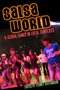
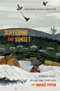

|
The Asian American Avant-Garde
Universalist Aspirations in Modernist Literature and Art
Clark, Audrey Wu
Examining early Asian American writers and artists as modernists
246 pp • 6x9 • Fall 2015
paper 978-1-4399-1227-0
cloth 978-1-4399-1226-3 |
|
The Audacity of Hoop
Basketball and the Age of Obama
Wolff, Alexander
The influence Barack Obama has had on basketball and vice versa, in essays and photographs
224 pp • 10x8 • Fall 2015
cloth 978-1-4399-1309-3 |
|
BITS of Belonging
Information Technology, Water, and Neoliberal Governance in India
Dasgupta, Simanti
An ethnographic investigation of the class politics that underscore the emergence of neoliberalism in urban India
232 pp • 6x9 • Fall 2015
paper 978-1-4399-1259-1
cloth 978-1-4399-1258-4 |
|
Building the Urban Environment
Visions of the Organic City in the United States, Europe, and Latin America
Platt, Harold L.
An international comparative study that considers how competing agents of change have interacted to build the urban environment
302 pp • 6x9 • Fall 2015
paper 978-1-4399-1237-9
cloth 978-1-4399-1236-2
|
|
City in a Park
A History of Philadelphia's Fairmount Park System
McClelland, James and Lynn Miller
How Philadelphia's early efforts at conservation led to the country's greatest park system
368 pp • 8x10 • Fall 2015
cloth 978-1-4399-1208-9 |
|
Dream Machine
Realism and Fantasy in Hindi Cinema
Dayal, Samir
How Hindi cinema has reflected the Indian public's self-understanding and posited new possibilities for national and individual identities
320 pp • 6x9 • Fall 2015
paper 978-1-4399-1064-1
cloth 978-1-4399-1063-4 |
|
Down and Out in Los Angeles and Berlin
The Sociospatial Exclusion of Homeless People
von Mahs, Jürgen
An international account of homelessness, comparing Berlin and Los Angeles and the possibility of exiting homelessness in each city
New in Paperback!
208 pp • 6x9 • Fall 2015
paper 978-1-4399-0827-3 |

|
Environmental Activism and the Urban Crisis
Baltimore, St. Louis, Chicago
Gioielli, Robert R.
How the postwar decay of America's industrial cities contributed to the birth of the modern environmental movement
New in Paperback!
224 pp • 6x9 • Fall 2015
paper 978-1-4399-0466-4 |
|
Framing the Audience
Art and the Politics of Culture in the United States, 1929-1945
Helfgott, Isadora Anderson
How artists, American critics, and media sought to widen the appreciation of fine art but held different views of democratic culture
326 pp • 6x9 • Fall 2015
paper 978-1-4399-1178-5
cloth 978-1-4399-1177-8 |
|
A Guilted Age
Apologies for the Past
Rushdy, Ashraf H. A.
The study and meaning of public apologies that have become frequent in the contemporary world
244 pp • 6x9 • Fall 2015
paper 978-1-4399-1322-2
cloth 978-1-4399-1321-5 |
|
Life in and against the Odds
Debts of Freedom and the Speculative Roots of U.S. Culture
Hoechst, Heidi
A persuasive meditation on how capitalism intersects with American nationalism in the making of race and class relations
300 pp • 6x9 • Fall 2015
paper 978-1-4399-1218-8
cloth 978-1-4399-1217-1 |
|
Love
A Philadelphia Affair
Kephart, Beth
From the best-selling author of Flow comes a love letter to the Philadelphia region, its places, and its people
144 pp • 5.5x8.5 • Fall 2015
cloth 978-1-4399-1315-4 |

|
Mobilizing Gay Singapore
Rights and Resistance in an Authoritarian State
Chua, Lynette J.
How gay activism survives in an authoritarian state that maintains power while promoting the rule of law and social harmony
New in Paperback!
228 pp • 6x9 • Fall 2015
paper 978-1-4399-1032-0 |

|
Rebuilding Community after Katrina
Transformative Education in the New Orleans Planning Initiative
edited by Reardon, Ken and John Forester
How a community-university partnership brought together analysis and political muscle to sustain New Orleans' Lower Ninth Ward
296 pp • 6x9 • Fall 2015
paper 978-1-4399-1100-6
cloth 978-1-4399-1099-3 |

|
The Risk Society Revisited
Social Theory and Governance
Rosa, Eugene A., Ortwin Renn and Aaron M. McCright
How risk is a feature in all societies, and its connection to the challenges of sustainability
New in Paperback!
264 pp • 6x9 • Fall 2015
paper 978-1-4399-0259-2 |
 |
Salsa World
A Global Dance in Local Contexts
edited by Hutchinson, Sydney
How an understanding of salsa dancing enhances our appreciation of salsa's global reach and meanings
New in Paperback!
240 pp • 6x9 • Fall 2015
paper 978-1-4399-1007-8 |
|
Sexology and Translation
Cultural and Scientific Encounters across the Modern World
edited by Bauer, Heike
Is the emergence of modern sexuality a global phenomenon?
284 pp • 6x9 • Fall 2015
paper 978-1-4399-1249-2
cloth 978-1-4399-1248-5 |
 |
Suffering and Sunset
World War I in the Art and Life of Horace Pippin
Bernier, Celeste-Marie
A majestic biography of the pioneering African American artist
552 pp • 6.125x9.25 • Fall 2015
cloth 978-1-4399-1273-7 |

|
Terrorizing Latina/o Immigrants
Race, Gender, and Immigration Politics in the Age of Security
Sampaio, Anna
A comprehensive analysis of changes in immigration policy, politics, and enforcement since 9/11
230 pp • 6x9 • Fall 2015
paper 978-1-4399-1286-7
cloth 978-1-4399-1285-0 |
|
Un-American
W.E.B. Du Bois and the Century of World Revolution
Mullen, Bill V.
A political biography that presents W.E.B. Du Bois as a life-long global revolutionary, not simply an African American reformer
264 pp • 6x9 • Fall 2015
paper 978-1-4399-1110-5
cloth 978-1-4399-1109-9 |
|
Unsettled
Cambodian Refugees in the New York City Hyperghetto
Tang, Eric
Why Cambodian refugees experience life in the U.S. as a form of captivity, since self-sufficiency remains an elusive goal
234 pp • 5.5x8.25 • Fall 2015
paper 978-1-4399-1165-5
cloth 978-1-4399-1164-8
|
|
Vanishing Eden
White Construction of Memory, Meaning, and Identity in a Racially Changing City
Maly, Michael T. and Heather M. Dalmage
Tracking the complexities of whiteness through an analysis of the experiences and memories of whites who lived in racially changing Chicago neighborhoods
198 pp • 6x9 • Fall 2015
paper 978-1-4399-1119-8
cloth 978-1-4399-1118-1 |
|
Walking in Cities
Quotidian Mobility as Urban Theory, Method, and Practice
edited by Brown, Evrick and Timothy Shortell
Making the case for urban walking as a significant social activity and as a method for studying urban communities
292 pp • 6x9 • Fall 2015
paper 978-1-4399-1221-8
cloth 978-1-4399-1220-1 |
Click here to download the catalog (pdf). |